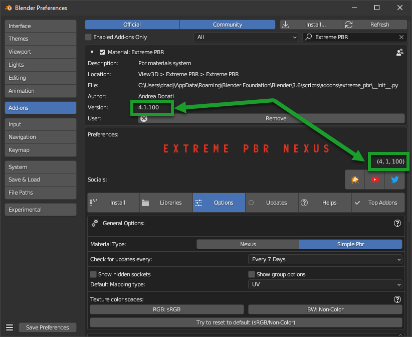

New Installation v 4.1.100 and up
Tip
To check which version of Extreme PBR you are using, and therefore be sure which guide to follow, you can check
the version of the addon in 2 ways:
- Via edit > preferences > addons and looking for the addon in the list by typing Extreme PBR in the search bar
- If you have already installed the addon, you can access the preferences, by clicking on the button Open Options
So the version is indicated in 2 places in the preferences window like this:
{kind=link}
Instal the addon
The first step is to install the addon in Blender. Below are instructions for installing the addon
Important
If you have a version lower than 4.1.100 (For example 4.0.2##) you can update the addon to version 4.1.100
following these steps below.
Download the files
Tip
You can download the .exapack files little by little and install only 1 volume at a time, it doesn’t matter the order.
I suggest you to download first the XTRPbr_05k_Vol_001.exapack and the XTRPbr_Procedural_Vol_001.exapack packages.
You can install the others at any time. The addon recognizes what has already been installed and what not.
This will allow you to try Extreme PBR while the other files are downloaded
In your product page, you can find various files, the main ones for the installation are the following:
{kind=link}
XTRPbr_##_Vol_#.exapackare the files of the library. and they are divided with increasing number. Example of downloaded .exapack files on the computer, below in the image:
{kind=link}
The .exapack files are installed by the addon, they do not need to be installed manually! After installing the
Extreme PBR addon, it will manage your exapack packages and install them. (You will see in the following steps)
Note
For Mac users: it often happens that Safari Browser is set to decompress .zip files, make sure this does not happen, otherwise the .zip file will no longer be a .zip file and you will not be able to install the addon as follows.
Just go to the Safari menu bar at the top left and click on Safari>Preferences, then remove the check mark from “Open safe files after download” in the “General” window. Done, if in the future you download zipped files with safari, they will no longer be unzipped.
Install Into Blender
Now, download the addon and install it in Blender, the procedure is as follows:
Download the addon (Remember that you must be logged in to the site where you purchased the addon):
If you purchased on Blendermarket you can find the addon here:
If you purchased on Gumroad you can find the addon here:
Addon name Example: extreme_pbr_v41100 (The number can be different, it depends on the version you are downloading)
Important
The addon file must remain in zip format! Do not unzip the file, otherwise you will not be able to install it correctly. This note is especially for Mac users. If you do not know how to prevent Safari from decompressing zip files, take a look here Download the files
Once the addon is downloaded, open Blender and go to:
Edit > Preferences > Add-ons > Install

Select the downloaded file (extreme_pbr_v41100.zip <– !This name is only an example!) and click on “Install Addon” (The name of the file can be different from version to version)

If everything went well, the addon is in the list of installed addons, you can also search for it by typing “Extreme PBR” Mark the checkbox to activate it.

Install The library
If you have installed the addon correctly, now you can proceed with the installation of the library.
Note
If you are a user coming from a old version of Extreme PBR Nexus* you can update the list of packages from this menu, by pressing the Try compile Exapack button, this based on the materials you already had installed will compile the list of files by comparing with the packages available online, and will allow you to download only the packages you need. In fact, once compiled, you will have those online on the left, and those on the right
{kind=link}
Step 1
Download the file XTRPbr_1k_vol_1.exapack, this is the package containing the 1k resolution files, it is also the smallest package in terms of Size, so it is easy and fast. You can download the others at any time. You can download all the .exapack files and run everything at once if you wish
Step 2
When you have finished downloading the exapack files you want to install, go to the Extreme PBR Preferences window and go to the Install Libraries (TAB) section and press the “Default Library” button you see in the following image in red.
Tip
If you do not see the Extreme PBR Welcome panel, you can open it by pressing the “N” key on the keyboard.

When you press this button, a file browser will open, you will have to choose a location on your computer where the root folder of the entire Default Library will be created
Warning
Do not choose the path in the path where blender installs the addons!
Avoid choosing paths on LAN connected disks, resources may not be reachable
If you are also installing the expansion.exapack, these will be installed in another root folder, in the same location where the Default Library is located
It is not recommended to use an external Hard Disk connected via USB (Unless it is an external SSD disk)
Step 3
Now the situation should look like this, where the “Choose Exapacks” button appears.
{kind=link}
Press the “Choose Exapacks” button and select the .exapack files you just downloaded. You can choose them all, just make sure to select them within the File Browser. (The files not selected will be ignored) Then press the button in the file browser window Choose Exapacks to confirm

Step 4
Now you should have the list of exapack files selected, in list, ready to be installed, you will just have to press the “Install From Exapack Files” button to proceed with the installation. As follows in this image:
Note
The exapack files are deleted once installed by the addon, this is for space issues if you want to keep them (Not Recommended) check the “Keep Exapack After Install” box and the files will be kept on the disk. But be careful, this means that you will have the weight of the library almost X2

During the installation process of the .exapack packages, the interface will show the progress of the installed packages You can also stop the process whenever you want (Just press the button (X) next to the big status bar) in this case, the installed packages will remain installed.
Important
I want to emphasize: All installed packages will remain installed, even if the installation process is interrupted. If the installation is resumed, the installation process will resume from where it was interrupted, because the addon recognizes the already installed files and skips them.

Note
The installation speed depends a lot on the type of disk in use, I have done various tests, and the installation on SSD is very fast. I do not recommend the use of an external Mechanical Hard Disk connected via USB only for time issues, I noticed that these disks are very slow for this process. But if you do not have time problems and you have patience, you can decide to use it.
Step 5
When you have completed the entire (or even just in part) installation, the addon will be ready to be used.
{kind=link}
Note
The 1k, 2k, 4k, 8k, 16k versions are present in the complete edition. Some versions may not contain all the resolution versions. If you want to upgrade to the full version, you only pay the difference
At the end of this process, on your computer, in the indicated path, 2 folders will have been created (3 if you also installed the HDRMAPS expansion)
HDRI_MAKER_DEFAULT_LIBRARY (This folder contains all the files of the Extreme PBR libraries)
HDRI_MAKER_USER_LIBRARY (This folder is an empty folder, and will be used in case you want to save your personal HDRi)
If you also installed the HDRMAPS expansion, then a third folder will also be created and will be named after the expansion.
To manipulate the paths to the libraries, it is enough to go to the Extreme PBR settings and go to the Libraries (TAB) section
For more information on this section you can find the chapter Libraries

About Exapack
As for the libraries, from version 3.0.100 onwards, they will be distributed in the form of exapack packages. All new packages will be in the form of numbered volumes Here is an example of nomenclature
Default Library
XTRPbr_1k_vol_1.exapack: Contains files from 1k, previews, and data files
XTRPbr_2k_vol_1.exapack: Contains files from 2k, previews, and data files
XTRPbr_4k_vol_1.exapack: Contains files from 4k, previews, and data files
XTRPbr_8k_vol_1.exapack: Contains files from 8k, previews, and data files
XTRPbr_16k_vol_1.exapack: Contains files from 16k, previews, and data files
The packages are consecutive, Vol_1, Vol_2, Vol_3, I tried to limit as much as possible the size of the packages, so that their maximum is around 2GB (Some can reach 2.5GB). This limit to avoid download and installation problems, since those who have a slower connection, could encounter timeout problems.
Note
The large size packages like 8k and 16k will have more volumes, because they are much larger. The small size packages like 1k and 2k will have less volumes, because they are much smaller.
The .exapack files are installed by the addon, they do not need to be installed manually! After installing the Extreme PBR addon, it will manage your exapack packages and install them. (You will see in the following steps)
Important
For Mac users: it often happens that Safari Browser is set to decompress .zip files, make sure this does not happen, otherwise the .zip file will no longer be a .zip file and you will not be able to install the addon as follows.
Just go to the Safari menu bar at the top left and click on Safari>Preferences, then remove the check mark from “Open safe files after download” in the “General” window. Done, if in the future you download zipped files with safari, they will no longer be unzipped.